Capítulo 2 Análisis Exploratorio de Datos
2.1 Características Sociodemográficas
2.1.1 Género
| Categoria | Frecuencia | Proporcion (%) |
|---|---|---|
| Female | 372 | 54.71 |
| Male | 297 | 43.68 |
| Missing | 11 | 1.62 |
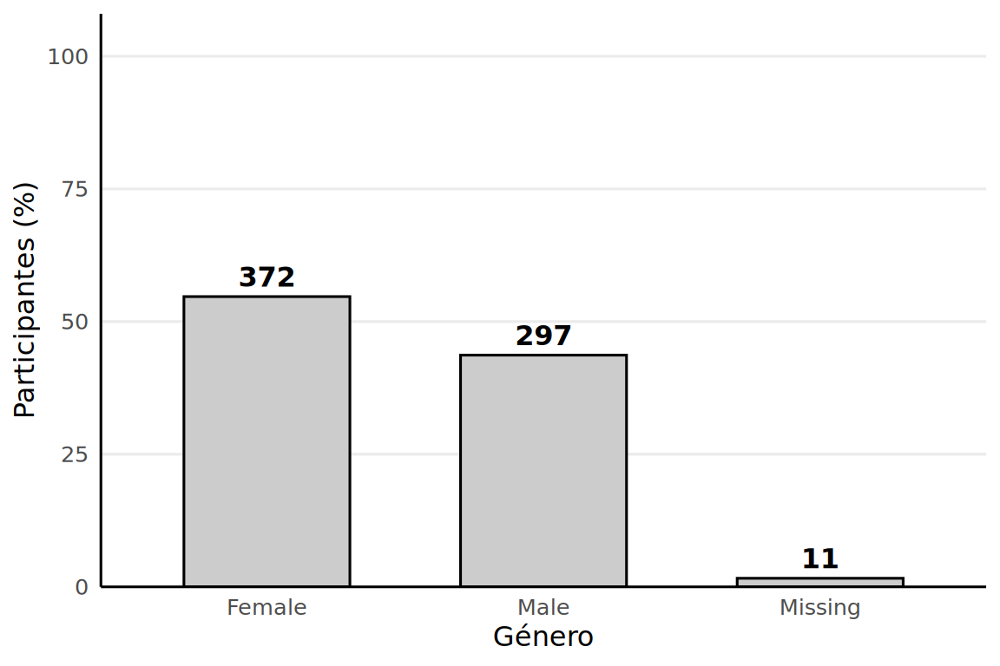
Figure 2.1: Distribución de participantes por género
La muestra presenta una ligera mayoría de participantes de género femenino (372 de 680, 54.7%), frente a 297 participantes de género masculino (43.7%). El porcentaje de valores faltantes en esta variable es bajo (11 casos, 1.6%).
2.1.2 Edad
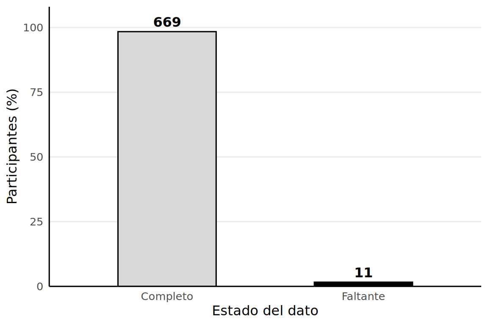
Figure 2.2: Completitud de la variable Edad
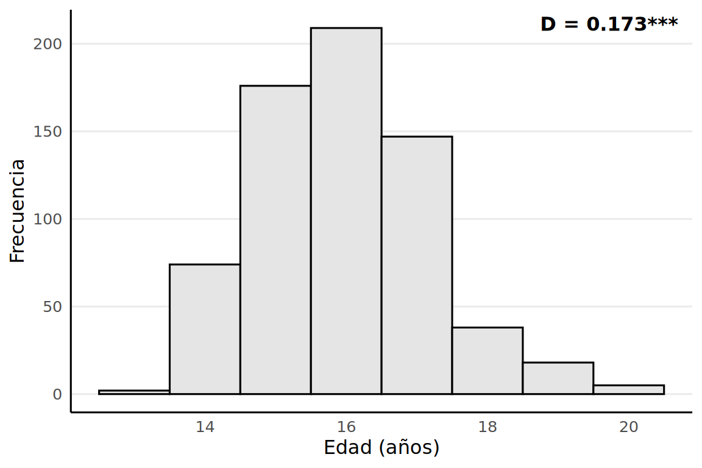
Figure 2.3: Distribución de la edad de los participantes
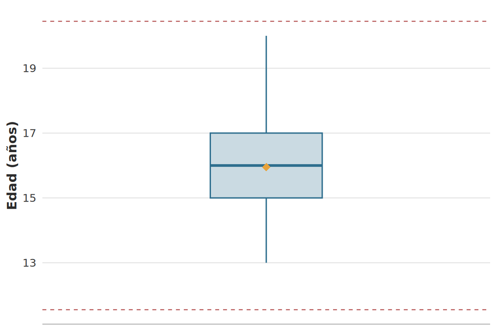
Figure 2.4: Boxplot de la edad con umbrales de Hampel
| N | Faltantes | Media | DE | Mediana | Mín | Máx |
|---|---|---|---|---|---|---|
| 669 | 11 | 15.95 | 1.24 | 16 | 13 | 20 |
La edad presenta un bajo porcentaje de valores faltantes (11 de 680, 1.6%). El test de Lilliefors confirma una desviación estadísticamente significativa de la normalidad, consistente con la ligera asimetría positiva observada en el histograma. El filtro de Hampel (mediana ± 3×MAD) no evidencia valores atípicos: todas las edades registradas se encuentran dentro del rango esperado para la población de estudio (adolescentes escolarizados de 9.° a 11.°).
2.1.3 Grado Escolar
| Categoria | Frecuencia | Proporcion (%) |
|---|---|---|
| 9 | 223 | 32.79 |
| 10 | 213 | 31.32 |
| 11 | 231 | 33.97 |
| Missing | 13 | 1.91 |
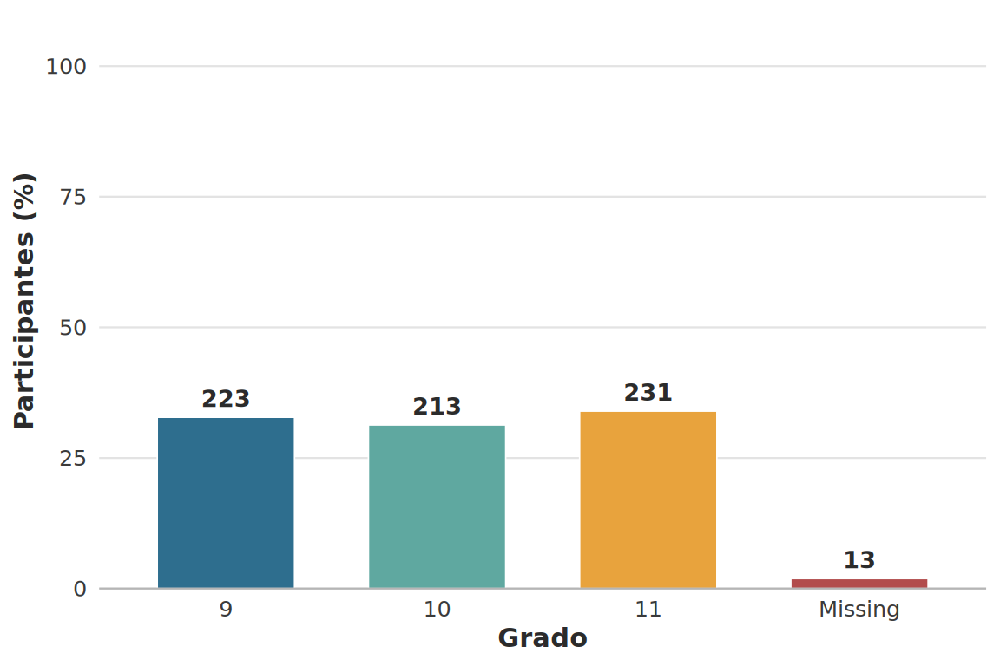
Figure 2.5: Distribución de participantes por grado escolar
La distribución por grado escolar es relativamente balanceada entre 9.°, 10.° y 11.°, lo que favorece la representatividad de comparaciones estratificadas por nivel académico en los análisis posteriores.
2.1.4 Municipio
| Categoria | Frecuencia | Proporcion (%) |
|---|---|---|
| Santo Tomas | 227 | 33.38 |
| Polo Nuevo | 354 | 52.06 |
| Puerto Colombia | 74 | 10.88 |
| Suan | 25 | 3.68 |
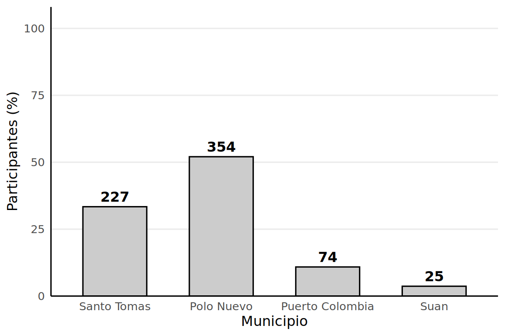
Figure 2.6: Distribución de participantes por municipio
Polo Nuevo y Santo Tomás concentran la mayor parte de la muestra, mientras que Puerto Colombia y Suan constituyen un estrato secundario, más reducido, de participantes.
2.1.5 Etnia
| Categoria | Frecuencia | Proporcion (%) |
|---|---|---|
| Mestizo | 245 | 36.03 |
| Caucasian | 199 | 29.26 |
| Afrodescendant | 103 | 15.15 |
| Other | 77 | 11.32 |
| Missing | 56 | 8.24 |
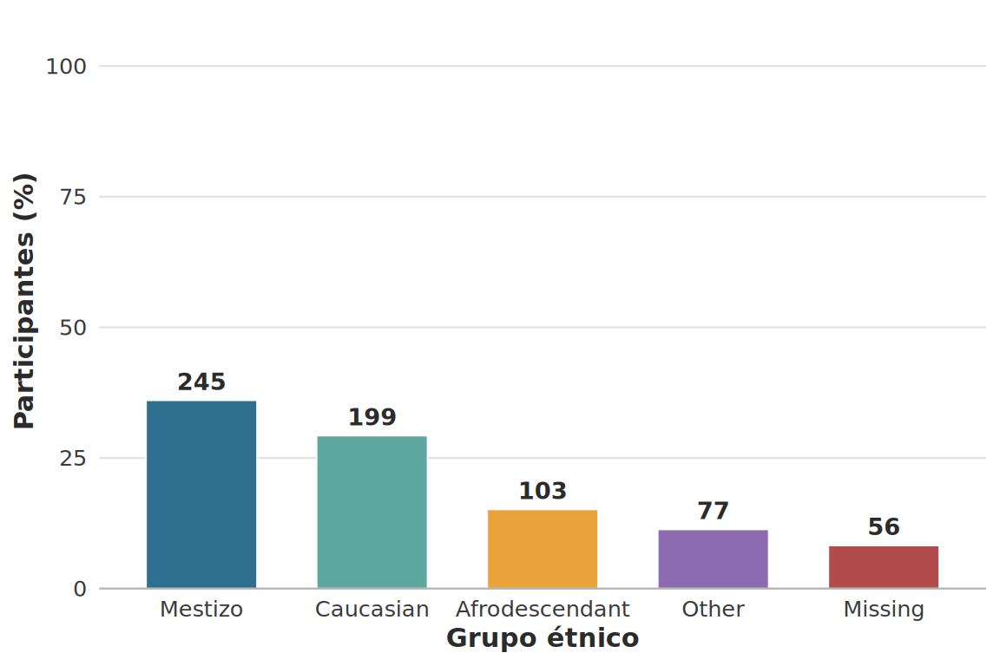
Figure 2.7: Distribución de participantes por grupo étnico
La composición étnica de la muestra es heterogénea, con ‘Mestizo’ y ‘Caucasian’ como las categorías más frecuentes, seguidas de ‘Afrodescendant’ y ‘Other’. El porcentaje de valores faltantes en esta variable (8.2%) es mayor que en las demás variables demográficas, lo que sugiere mayor reticencia o dificultad de auto-reporte en este ítem.
2.1.6 Nivel Socioeconómico (SSE)
| Categoria | Frecuencia | Proporcion (%) |
|---|---|---|
| Low | 493 | 72.50 |
| Medium | 111 | 16.32 |
| High | 7 | 1.03 |
| Missing | 69 | 10.15 |
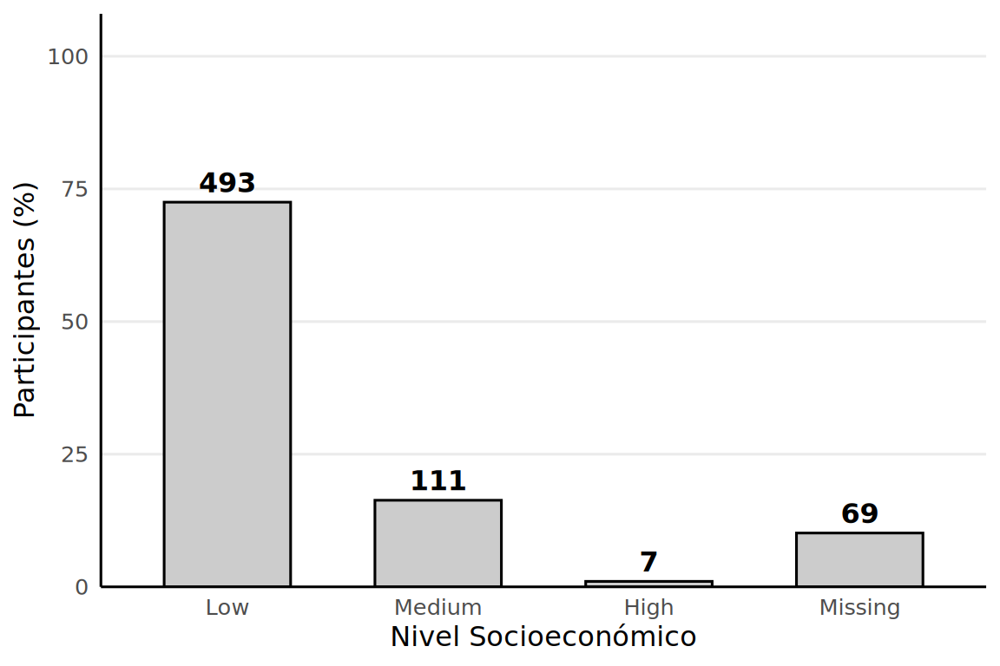
Figure 2.8: Distribución de participantes por nivel socioeconómico
El nivel socioeconómico ‘Low’ concentra a la gran mayoría de la muestra, seguido de ‘Medium’, mientras que ‘High’ representa una fracción marginal. Esta distribución es consistente con el contexto semirural de los municipios estudiados. El porcentaje de valores faltantes (10.1%) es el más alto entre las variables demográficas, atribuible probablemente a que un subconjunto de adolescentes desconoce la clasificación socioeconómica oficial de su hogar.
2.1.7 Nivel Educativo de los Padres
| Categoria | Frecuencia | Proporcion (%) |
|---|---|---|
| Primary | 45 | 6.62 |
| High School | 453 | 66.62 |
| Undergraduate | 85 | 12.50 |
| Graduate | 54 | 7.94 |
| Missing | 43 | 6.32 |
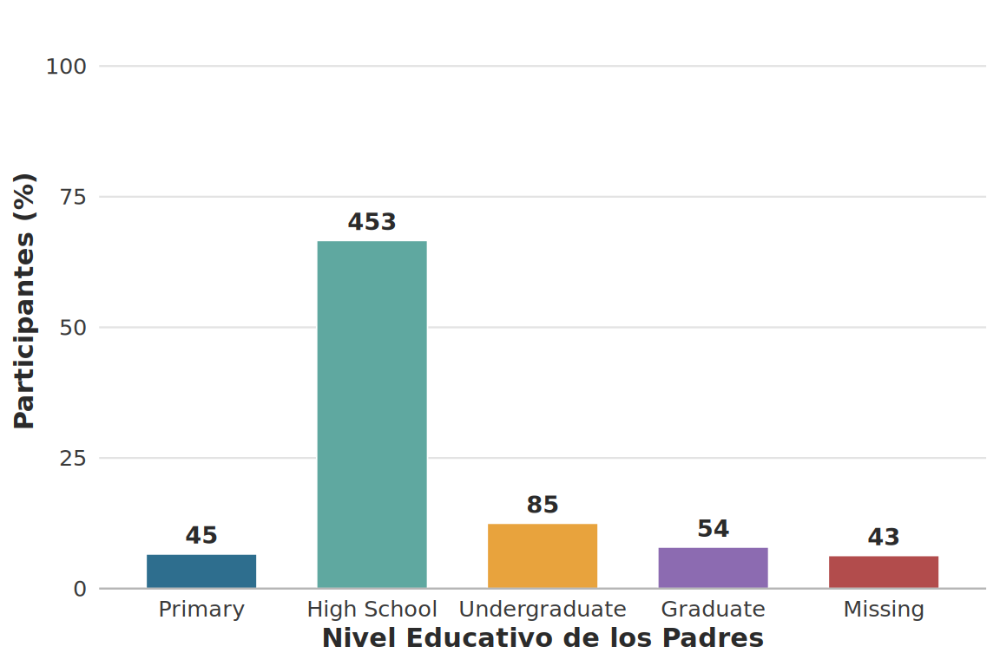
Figure 2.9: Distribución de participantes por nivel educativo de los padres
‘High School’ es la categoría modal, lo que indica que la educación secundaria está ampliamente asegurada entre los hogares de los participantes, mientras que el acceso a educación superior (‘Undergraduate’ y ‘Graduate’) es considerablemente menor.
2.2 Apoyo Social Percibido y Entrapment
Las variables Family, Friends y SigOthers corresponden a los puntajes latentes de
las tres dimensiones de la Escala Multidimensional de Apoyo Social Percibido (MSPSS):
familia, amigos y otras personas significativas. La variable Entrapment corresponde al
puntaje latente de entrapment, acompañado de su error estándar de medición
(Entrapment_SE). Al tratarse de puntajes derivados de un modelo de medición, se
esperan distribuciones aproximadamente continuas centradas alrededor de cero.
2.2.1 Apoyo Familiar (Family)

Figure 2.10: Completitud de la dimensión Family
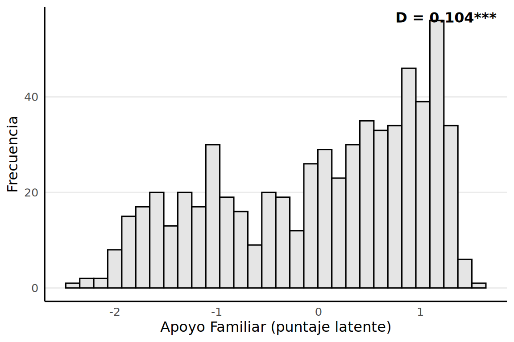
Figure 2.11: Distribución del puntaje de apoyo familiar
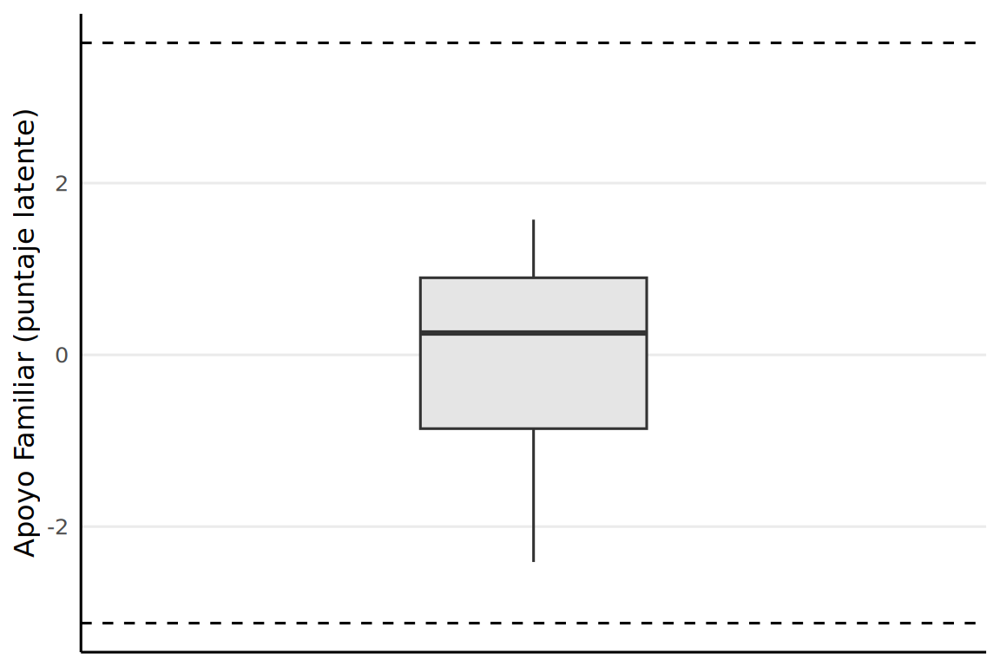
Figure 2.12: Boxplot del puntaje de apoyo familiar con umbrales de Hampel
| N | Faltantes | Media | DE | Mediana | Mín | Máx |
|---|---|---|---|---|---|---|
| 632 | 48 | 0.02 | 1 | 0.25 | -2.41 | 1.57 |
2.2.2 Apoyo de Amigos (Friends)
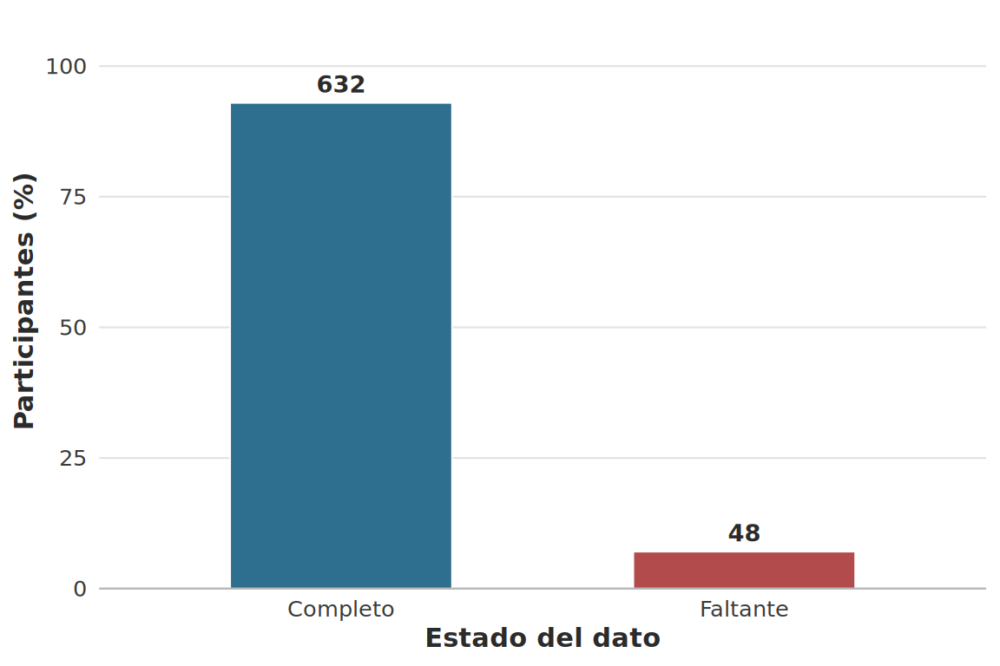
Figure 2.13: Completitud de la dimensión Friends
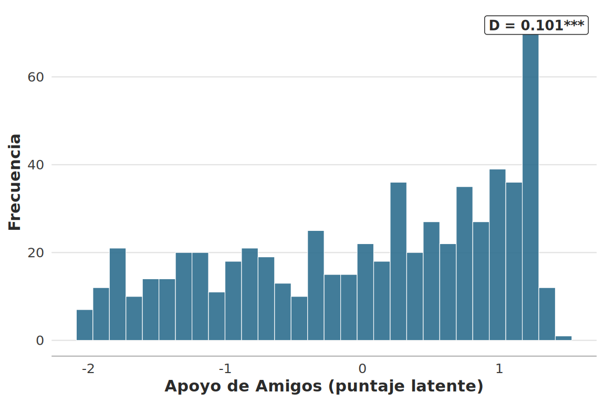
Figure 2.14: Distribución del puntaje de apoyo de amigos
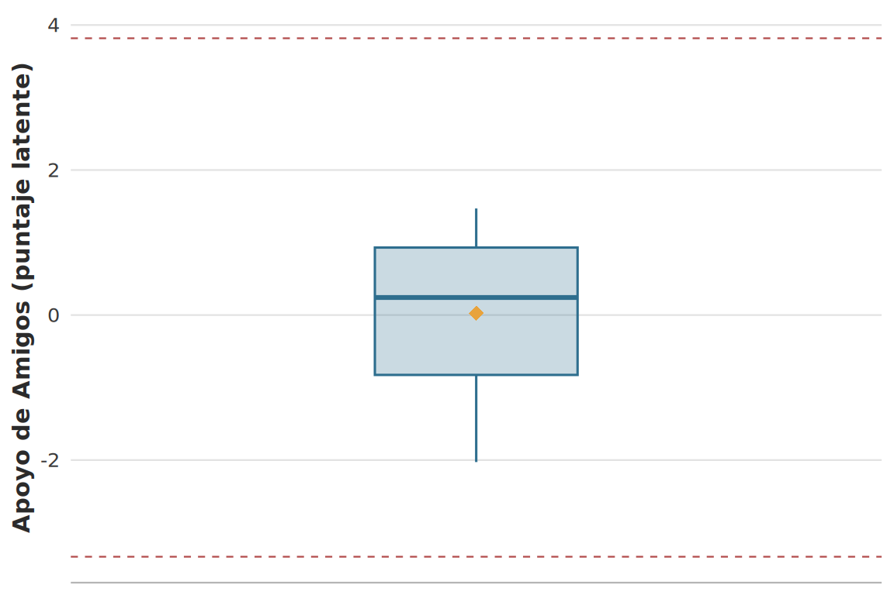
Figure 2.15: Boxplot del puntaje de apoyo de amigos con umbrales de Hampel
| N | Faltantes | Media | DE | Mediana | Mín | Máx |
|---|---|---|---|---|---|---|
| 632 | 48 | 0.03 | 1 | 0.24 | -2.03 | 1.47 |
2.2.3 Apoyo de Otras Personas Significativas (SigOthers)

Figure 2.16: Completitud de la dimensión SigOthers
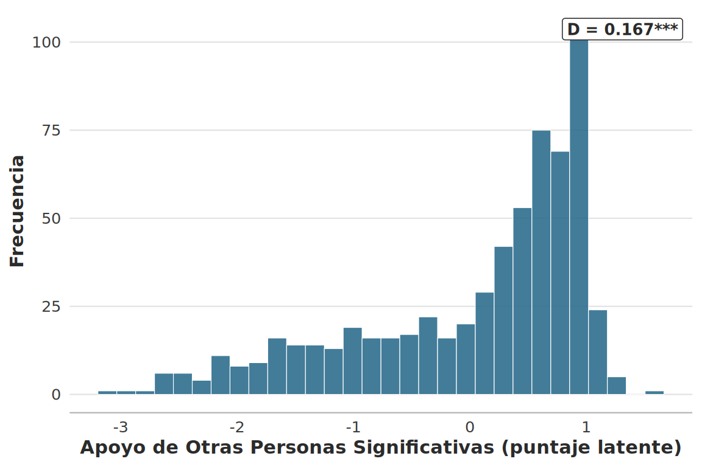
Figure 2.17: Distribución del puntaje de apoyo de otras personas significativas
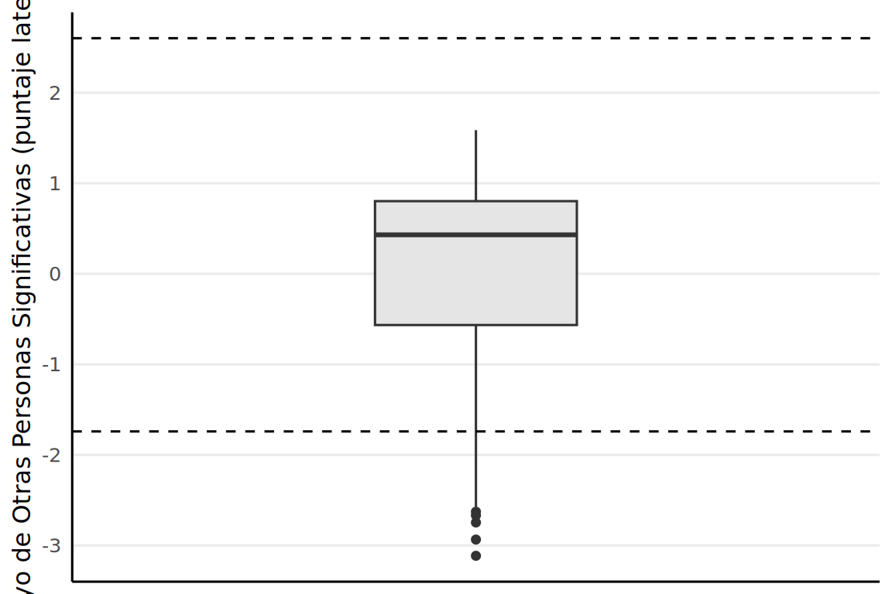
Figure 2.18: Boxplot del puntaje de SigOthers con umbrales de Hampel
| N | Faltantes | Media | DE | Mediana | Mín | Máx |
|---|---|---|---|---|---|---|
| 632 | 48 | 0.03 | 0.99 | 0.43 | -3.11 | 1.59 |
Las tres dimensiones del apoyo social percibido comparten un patrón de valores faltantes de magnitud similar (48 casos, 7.1%), lo cual es consistente con que provienen del mismo instrumento (MSPSS) y probablemente del mismo subconjunto de participantes con no-respuesta en la escala completa.
2.2.4 Entrapment
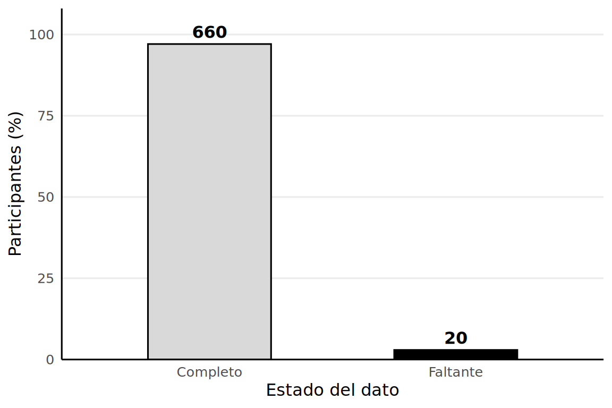
Figure 2.19: Completitud del puntaje de Entrapment
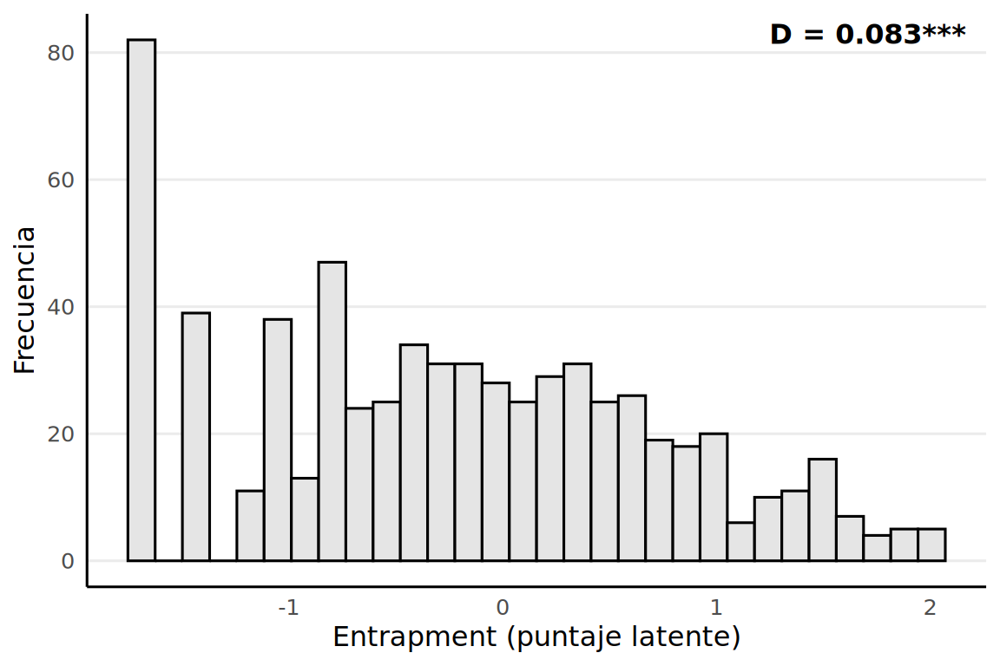
Figure 2.20: Distribución del puntaje de Entrapment
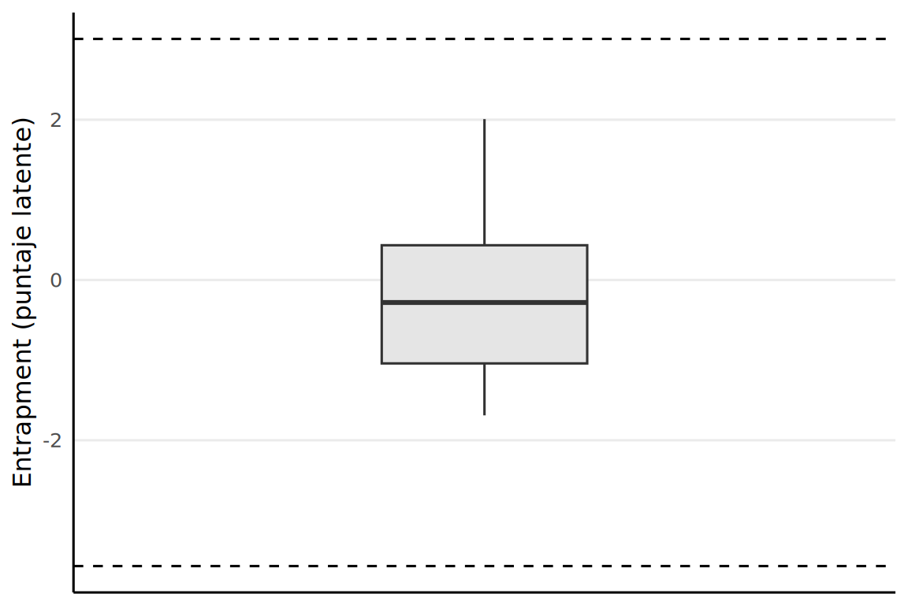
Figure 2.21: Boxplot del puntaje de Entrapment con umbrales de Hampel
| N | Faltantes | Media | DE | Mediana | Mín | Máx |
|---|---|---|---|---|---|---|
| 660 | 20 | -0.25 | 0.97 | -0.28 | -1.69 | 2.01 |
2.2.4.1 Error estándar de medición (Entrapment_SE)
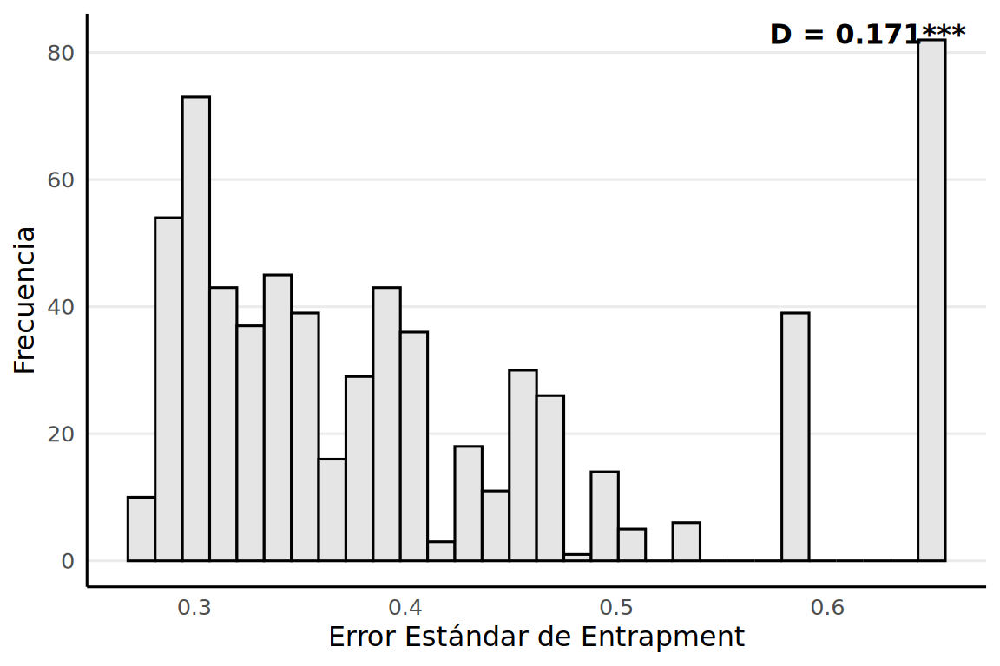
Figure 2.22: Distribución del error estándar del puntaje de Entrapment
El error estándar de medición de entrapment varía entre participantes, lo que refleja la precisión diferencial del puntaje latente estimado y deberá tenerse en cuenta al incorporar la incertidumbre de medición en los modelos de moderación (por ejemplo, mediante un enfoque SEM o Bayesiano).
2.2.5 Correlaciones entre las variables continuas
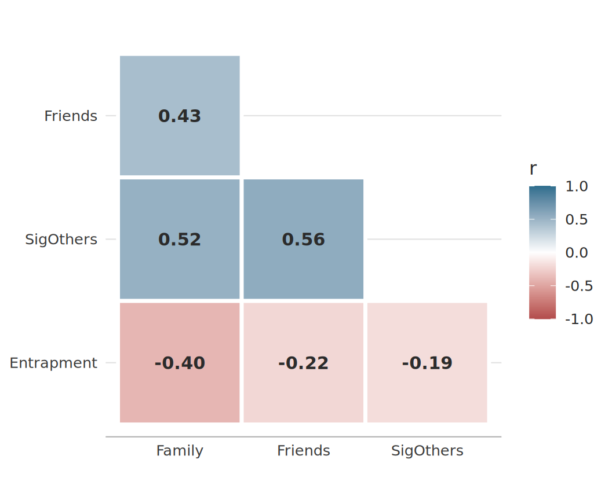
Figure 2.23: Matriz de correlación (pares completos) entre apoyo social y entrapment
Como es de esperar, las tres dimensiones del apoyo social percibido están
correlacionadas positivamente entre sí, mientras que Entrapment muestra una asociación
en sentido contrario con cada una de ellas, en línea con la hipótesis de que un mayor
apoyo social percibido se relaciona con menores niveles de entrapment. Esta observación
descriptiva es la que se pondrá a prueba formalmente mediante los modelos de regresión
jerárquica planteados en el proyecto.